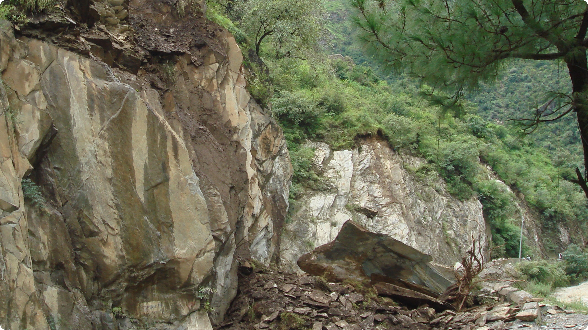

Causes of Landslides:
- Heavy **rainfall** or rapid snowmelt saturating the ground.
- **Earthquakes** and ground shaking destabilizing slopes.
- **Volcanic activity** creating loose debris and ash.
- **Erosion** or poor land use (e.g., deforestation).
Landslide Prevention Tips:
- Avoid building homes near steep slopes or drainage ways.
- Plant trees and vegetation to help stabilize the soil on slopes.
- Improve drainage around your home to divert water away from unstable areas.
- Participate in community disaster preparedness programs.
- Prepare an emergency kit and a practiced evacuation plan.
- Learn the warning signs of ground movement, such as tilting trees or cracks in the ground.
- Do not dump yard waste or fill material on unstable slopes.
What To Do During a Landslide:
- Move away from the path of the slope immediately.
- If escape is not possible, curl into a tight ball and protect your head and neck.
- Seek shelter behind a sturdy object (large tree, vehicle) for protection from debris.
- If indoors, move quickly to an interior room on a higher floor, away from windows.
- Always follow official evacuation orders from authorities promptly.
- Be alert for warning sounds, such as cracking wood or shifting rocks.
What To Do After a Landslide:
- Stay away from the slide area—there may be more movement or mudflow.
- Check for injured persons or trapped neighbors and call for professional help.
- Listen to authorities for official updates and safety instructions before re-entering any zone.
- Inspect your home's foundation and utility connections (gas, electric, water) for damage before using them.
- Watch for flooding, which may occur after a landslide or mudflow.